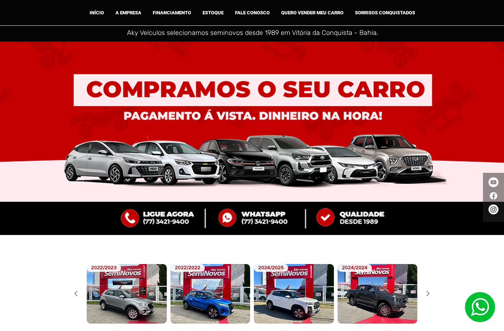
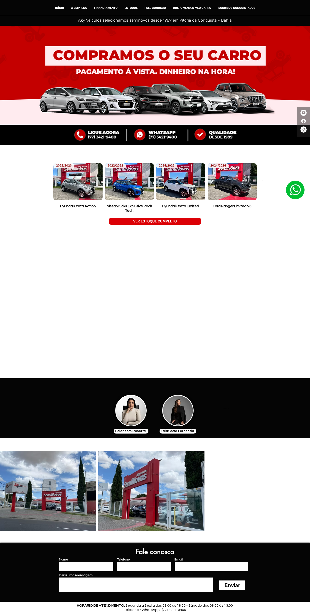

Sistema de Investigação de Marca e Identidade Online
https://www.akyveiculos.com/
Prioridade: MEDIUM · Cenário: B_AMBIGUOUS_COMMUNICATION · Revisão humana: PENDING
Trata-se de uma revenda de veículos seminovos com identidade visual própria predominante, sem indícios de personificação do Banco BV ou uso indevido de logotipos. Contudo, ao promover intermediação de crédito automotivo e citar parceiros financeiros no rodapé, o estabelecimento omite seu CNPJ e a declaração obrigatória de correspondente bancário independente estipulada pela Resolução CMN nº 4.935/2021, configurando comunicação ambígua que requer revisão. [Revisor: CONFIRM] Trata-se de uma revenda de veículos seminovos que cita instituições financeiras (incluindo 'bv financeiro') e oferta financiamento automotivo, porém não apresenta no rodapé ou na página inicial sua inscrição de CNPJ, declaração formal de correspondente bancário independente nem canal de ouvidoria (Resolução CMN nº 4.935/2021). A identidade própria da loja é predominante e não há overbranding ou uso indevido de logotipo, justificando a confirmação como REVIEW_REQUIRED.


| Ref | Tipo | Local | Conteúdo |
|---|---|---|---|
| E-URL | domain | url | URL final: https://www.akyveiculos.com/ (domínio: www.akyveiculos.com) |
| E-COLLECT | network | collection | Status da coleta: OK; HTTP 200; ocorrências: network did not become idle (continuing) |
| E-DISC-001 | text | search_index | Índice de busca (grounding): akyveiculos.com — Com base nas consultas realizadas voltadas a lojas de veículos, revendas, feirões e correspondentes bancários na **região Nordeste** que divulgam financiamento das marcas **Banco BV** / **BV Financeira**, foram identificadas as seguintes páginas públicas relevantes para fins de conformidade (Resolução CMN nº 4.935/2021) e proteção de marca | **URL:** `https://akyveiculos.com/` | **Como utiliza a marca:** Revenda de seminovos que promove linhas de financiamento de até 60 meses e financiamento de particular para particular, indexando e referenciando diretamente a **BV Financeira** entre suas opções de crédito | Não exibe CNPJ nem menção obrigatória à relação contratual de correspondente bancário com a instituição |
| E-SHOT-VIEWPORT | screenshot | viewport | evidence/C1362413164/attempt-1/viewport.png (sha256 8abe245ec6af4096…) |
| E-SHOT-FULL | screenshot | page | evidence/C1362413164/attempt-1/fullpage.png (sha256 fa9cedf79e5fe66d…) |
| E-TITLE | title | head | Aky Veículos | Revenda de seminovos em Vitória da Conquista |
| E-META-1 | meta | head | description: Aky Veículos selecionamos seminovos desde 1989 em Vitória da Conquista - Bahia. |
| E-META-2 | meta | head | og:site_name: Aky Veículos |
| E-META-3 | meta | head | og:title: Aky Veículos | Revenda de seminovos em Vitória da Conquista |
| E-META-4 | meta | head | og:description: Aky Veículos selecionamos seminovos desde 1989 em Vitória da Conquista - Bahia. |
| E-CANONICAL | meta | head | https://www.akyveiculos.com/ |
| E-HEAD-1 | heading | page | Hyundai Creta Action |
| E-HEAD-2 | heading | page | Nissan Kicks Exclusive Pack Tech |
| E-HEAD-3 | heading | page | Hyundai Creta Limited |
| E-HEAD-4 | heading | page | Ford Ranger Limited V6 |
| E-HEAD-5 | heading | page | Toyota Corolla Altis Premium Hybrid |
| E-HEAD-6 | heading | page | Hyundai Creta Platinum Safety |
| E-HEAD-7 | heading | page | Hyundai Creta Comfort |
| E-HEAD-8 | heading | page | Hyundai Creta Limited Safety |
| E-HEAD-9 | heading | page | Hyundai Creta Action |
| E-HEAD-10 | heading | page | Hyundai Creta Limited Safety |
| E-HEAD-11 | heading | page | Toyota Corolla GLI |
| E-HEAD-12 | heading | page | Hyundai Creta Comfort |
| E-HEAD-13 | heading | page | Kia Rio EX |
| E-HEAD-14 | heading | page | Chevrolet Tracker LTZ Turbo |
| E-HEAD-15 | heading | page | Hyundai Creta Limited Safety |
| E-HDR | text | header | INÍCIO A EMPRESA FINANCIAMENTO ESTOQUE FALE CONOSCO QUERO VENDER MEU CARRO SORRISOS CONQUISTADOS |
| E-FOLD | text | viewport (acima da dobra) | INÍCIO A EMPRESA FINANCIAMENTO ESTOQUE FALE CONOSCO QUERO VENDER MEU CARRO SORRISOS CONQUISTADOS 2022/2023 Hyundai Creta Action 2022/2022 Nissan Kicks Exclusive Pack Tech 2024/2025 Hyundai Creta Limited 2024/2024 Ford Ranger Limited V6 2024/2024 Toyota Corolla Altis Premium Hybrid 2023/2024 Hyundai Creta Platinum Safety 2023/2024 Hyundai Creta Comfort 2024/2025 Hyundai Creta Limited Safety 2021/2021 Hyundai Creta Action 2023/2024 Hyundai Creta Limited Safety 2019/2020 Toyota Corolla GLI 2023/2024 Hyundai Creta Comfort 2020/2021 Kia Rio EX 2024/2025 Chevrolet Tracker LTZ Turbo 2024/2025 Hyundai Creta Limited Safety 2023/2024 Toyota Corolla Cross XRX Hybrid Aky Veículos selecionamos seminovos desde 1989 em Vitória da Conquista - Bahia. |
| E-FTR | text | footer | loja de carros vitória da conquista seminovos vitória da conquista carros veículos aki veículos loja de carros olx webmotos mobialto concessionaria 0km icarros taxa 0 bradesco financiamentos bv financeiro santander banco toyota gm fiat vw volksvagem suv hyundai Fale conosco Nome Telefone Email Insira uma mensagem Enviar HORÁRIO DE ATENDIMENTO: Segunda a Sexta das 08:00 às 18:00 - Sábado das 08:00 às 13:00 Telefone / WhatsApp: (77) 3421-9400 |
| E-NAV | nav | header | INÍCIO <https://www.akyveiculos.com/> | A EMPRESA <https://www.akyveiculos.com/a-empresa> | FINANCIAMENTO <https://www.akyveiculos.com/financiamento> | ESTOQUE <https://www.akyveiculos.com/estoque> | FALE CONOSCO <https://www.akyveiculos.com/fale-conosco> | QUERO VENDER MEU CARRO <https://www.akyveiculos.com/quero-vender-meu-carro> | SORRISOS CONQUISTADOS <https://www.akyveiculos.com/sorrisos-que-conquistamos> |
| E-CTA-1 | cta | page | VER ESTOQUE COMPLETO <https://www.akyveiculos.com/estoque> |
| E-CTA-2 | cta | page | Produto Anterior |
| E-CTA-3 | cta | page | Próximo Produto |
| E-CTA-4 | cta | page | Falar com Roberta <https://wa.me/557734219400?text=Ol%C3%A1%20Roberta,%20estava%20no%20site%20e%20preciso%20de%20mais%20informa%C3%A7%C3%B5es!> |
| E-CTA-5 | cta | page | Falar com Fernanda <https://wa.me/557734219400?text=Ol%C3%A1%20Fernanda,%20estava%20no%20site%20e%20preciso%20de%20mais%20informa%C3%A7%C3%B5es!> |
| E-CTA-6 | cta | footer | Enviar |
| E-CONTACT-1 | contact | page | Facebook <https://www.facebook.com/AkyVeiculos> |
| E-CONTACT-2 | contact | page | Instagram <https://www.instagram.com/akyveiculos> |
| E-CONTACT-3 | contact | page | <https://wa.me/557734219400?text=Ol%C3%A1%20Roberta,%20estava%20no%20site%20e%20preciso%20de%20mais%20informa%C3%A7%C3%B5es!> |
| E-CONTACT-4 | contact | page | Falar com Roberta <https://wa.me/557734219400?text=Ol%C3%A1%20Roberta,%20estava%20no%20site%20e%20preciso%20de%20mais%20informa%C3%A7%C3%B5es!> |
| E-CONTACT-5 | contact | page | <https://wa.me/557734219400?text=Ol%C3%A1%20Fernanda,%20estava%20no%20site%20e%20preciso%20de%20mais%20informa%C3%A7%C3%B5es!> |
| E-CONTACT-6 | contact | page | Falar com Fernanda <https://wa.me/557734219400?text=Ol%C3%A1%20Fernanda,%20estava%20no%20site%20e%20preciso%20de%20mais%20informa%C3%A7%C3%B5es!> |
| E-CONTACT-7 | contact | page | <https://api.whatsapp.com/send/?phone=557734219400&text=Ol%C3%A1+estava+navegando+pelo+site+da+Aky+Ve%C3%ADculos+e+preciso+de+mais+informa%C3%A7%C3%B5es!!%21&type=phone_number&app_absent=0> |
| E-TXT-001 | text | page | bv financeira |
| E-TXT-002 | text | page | loja de carros vitória da conquista seminovos vitória da conquista carros veículos aki veículos loja de carros olx webmotos mobialto concessionaria 0km icarros taxa 0 bradesco financiamentos bv financeiro santander banco toyota gm fiat vw volksvagem suv hyundai |
| E-TXT-003 | text | page | Telefone |
| E-TXT-004 | text | page | HORÁRIO DE ATENDIMENTO: Segunda a Sexta das 08:00 às 18:00 - Sábado das 08:00 às 13:00 |
| E-TXT-005 | text | page | Telefone / WhatsApp: (77) 3421-9400 |
| E-NET-BLOCKED | network | collection | 14 requisição(ões) bloqueadas pela política: https://frog.wix.com/panorama?src=11&evid=114700&sessionId=af00a904-b2d9-4543-b0f4-71836dc6c61d&platform=viewer&batchLength=43&batchSize=29645&batchItems=INFO%7Ccom.wixpress.html-client.wix-thunderbol -> empty or oversized URL; https://frog.wix.com/pa?_msid=8f82f730-e0bb-4206-bedf-5b8500517597&vsi=af00a904-b2d9-4543-b0f4-71836dc6c61d&_av=thunderbolt-1.18482.0&isb=true&isbr=ua&_brandId=wix&_siteBranchId=undefined&_ms=2742&_is -> empty or oversized URL; https://scontent-iad6-1.cdninstagram.com/v/t51.82787-15/916725950_18647263510025116_4979522422494422751_n.jpg?stp=dst-jpg_e35_tt6&_nc_cat=101&_nc_map=urlgen_bucketless&ccb=7-5&_nc_sid=18de74&efg=eyJlZ -> request cap reached; https://scontent-iad6-1.cdninstagram.com/v/t51.82787-15/914937810_18646947028025116_8648154736690760151_n.jpg?stp=dst-jpg_e35_tt6&_nc_cat=100&_nc_map=urlgen_bucketless&ccb=7-5&_nc_sid=18de74&efg=eyJlZ -> request cap reached; https://scontent-iad6-1.cdninstagram.com/v/t51.82787-15/893953084_18645386053025116_1416698087461881091_n.jpg?stp=dst-jpg_e35_tt6&_nc_cat=109&_nc_map=urlgen_bucketless&ccb=7-5&_nc_sid=18de74&efg=eyJlZ -> request cap reached |
| Dimensão | Sinal | Achado | Refs |
|---|---|---|---|
| VISUAL_IDENTITY | LEGITIMATE | Identidade visual própria da revenda de veículos (Aky Veículos Seminovos), com paleta vermelha e branca, fotos da fachada física e do estoque de automóveis, sem qualquer elemento visual mimetizando o Banco BV. | E-SHOT-VIEWPORT E-SHOT-FULL |
| DECLARED_COMMERCIAL_IDENTITY | NEUTRAL | O nome fantasia Aky Veículos é apresentado consistentemente em títulos, cabeçalho e imagens, mas falta a identificação cadastral formal (CNPJ e razão social). | E-TITLE E-META-1 E-FTR |
| CORRESPONDENT_TRANSPARENCY | CONFUSION | Ausência da identificação mandatória de correspondente bancário e de contatos de ouvidoria da instituição parceira ao ofertar intermediação de crédito/financiamento. | E-FTR E-DISC-001 |
| INSTITUTIONAL_LANGUAGE | LEGITIMATE | Comunicação estritamente comercial voltada à compra e venda de veículos seminovos em Vitória da Conquista/BA, sem assunção de postura institucional bancária. | E-FOLD E-HDR |
| LOGO_USAGE | LEGITIMATE | Não há aplicação de logotipo (nem atual, nem antigo) do Banco BV ou da BV Financeira; a marca aparece unicamente como texto simples. | E-SHOT-FULL E-TXT-001 |
| SERVICE_JOURNEY | NEUTRAL | A jornada direciona o usuário para contato direto via WhatsApp e telefone com consultores da própria loja para negociação de estoque e propostas de compra/financiamento. | E-CTA-4 E-CTA-5 E-CONTACT-7 |
| CONTACT_CHANNELS | LEGITIMATE | Canais de contato próprios da revenda (telefone fixo e WhatsApp com DDD 77 de Vitória da Conquista/BA). | E-TXT-005 E-CONTACT-4 |
| CONSUMER_CONFUSION | NEUTRAL | Risco de confusão direta de identidade é baixo devido ao predomínio evidente da loja física, porém a relação contratual financeira e as condições de intermediação permanecem omissas. | E-SHOT-FULL E-DISC-001 |
Trata-se de uma revenda de veículos seminovos com identidade visual própria predominante, sem indícios de personificação do Banco BV ou uso indevido de logotipos. Contudo, ao promover intermediação de crédito automotivo e citar parceiros financeiros no rodapé, o estabelecimento omite seu CNPJ e a declaração obrigatória de correspondente bancário independente estipulada pela Resolução CMN nº 4.935/2021, configurando comunicação ambígua que requer revisão.
Nenhum CNPJ ou razão social identificáveis no conteúdo coletado.
| Tipo | Valor | Ref | Contexto |
|---|---|---|---|
| domain | akyveiculos.com | E-URL | |
| social_profile | https://www.facebook.com/AkyVeiculos | E-CONTACT-1 | |
| social_profile | https://www.instagram.com/akyveiculos | E-CONTACT-2 | |
| trade_name | Aky Veículos | E-META-2 | |
| phone | (77) 3421-9400 | E-FTR | |
| <https://wa.me/557734219400?text=Ol%C3%A1%20Roberta,%20estava%20no%20site%20e%20preciso%20de%20mais%20informa%C3%A7%C3%B5es!> | E-CONTACT-3 | ||
| Falar com Roberta <https://wa.me/557734219400?text=Ol%C3%A1%20Roberta,%20estava%20no%20site%20e%20preciso%20de%20mais%20informa%C3%A7%C3%B5es!> | E-CONTACT-4 | ||
| <https://wa.me/557734219400?text=Ol%C3%A1%20Fernanda,%20estava%20no%20site%20e%20preciso%20de%20mais%20informa%C3%A7%C3%B5es!> | E-CONTACT-5 | ||
| Falar com Fernanda <https://wa.me/557734219400?text=Ol%C3%A1%20Fernanda,%20estava%20no%20site%20e%20preciso%20de%20mais%20informa%C3%A7%C3%B5es!> | E-CONTACT-6 | ||
| <https://api.whatsapp.com/send/?phone=557734219400&text=Ol%C3%A1+estava+navegando+pelo+site+da+Aky+Ve%C3%ADculos+e+preciso+de+mais+informa%C3%A7%C3%B5es!!%21&type=phone_number&app_absent=0> | E-CONTACT-7 |
Mapeamento indicativo para apoio à auditoria. Não constitui conclusão regulatória; a decisão definitiva pertence à auditoria.
Fonte: NORMATIVE
Art. 14. O contrato de correspondente deve estabelecer: [...] II - vedação à utilização, pelo contratado, de logomarca ou de outros atributos que sejam similares aos adotados pela instituição contratante em suas agências, postos de atendimento, sítio eletrônico na internet, aplicativo ou outras plataformas de comunicação em rede;
Evidência observada: E-SHOT-FULL E-SHOT-VIEWPORT E-TXT-001
Fonte: NORMATIVE
Art. 14. O contrato de correspondente deve estabelecer: [...] III - divulgação ao público, pelo contratado, de sua condição de prestador de serviços à instituição contratante, identificada pelo nome com que é conhecida no mercado, com descrição dos produtos e serviços oferecidos e canais de contato da instituição contratante, inclusive de sua ouvidoria, em local visível, em destaque e em formato legível, por meio de: a) sítio eletrônico do correspondente na internet, acessível na página inicial; b) aplicativo e outras plataformas de comunicação em rede do correspondente; [...]
Hipótese: Divulgação ao público da condição de prestador de serviços/parceria ausente, insuficiente, ambígua ou sem destaque. A norma disciplina correspondentes contratados; o responsável não foi identificado como correspondente.
Evidência observada: E-DISC-001 E-FTR E-SHOT-FULL E-TXT-001 E-TXT-002
Informação faltante:
Fonte: NORMATIVE
Art. 3º O correspondente atua por conta e sob as diretrizes da instituição contratante, que assume inteira responsabilidade pelo atendimento prestado aos clientes e usuários por meio do contratado.
Evidência observada: E-CONTACT-4 E-TXT-005
Se o responsável não for correspondente contratado, os indícios podem caracterizar uso indevido de marca ou fraude, fora do escopo da Res. 4.935: avaliar encaminhamento às áreas jurídica/segurança.
Limitações: requisitos contratuais/internos não fornecidos: mapeamento limitado ao texto normativo
Decisão: CONFIRM → REVIEW_REQUIRED / MEDIUM
Trata-se de uma revenda de veículos seminovos que cita instituições financeiras (incluindo 'bv financeiro') e oferta financiamento automotivo, porém não apresenta no rodapé ou na página inicial sua inscrição de CNPJ, declaração formal de correspondente bancário independente nem canal de ouvidoria (Resolução CMN nº 4.935/2021). A identidade própria da loja é predominante e não há overbranding ou uso indevido de logotipo, justificando a confirmação como REVIEW_REQUIRED.
| Tema | Severidade | Questionamento | Refs |
|---|---|---|---|
| Menção residual em SEO/palavras-chave | LOW | A menção a 'bv financeiro' ocorre de forma secundária em um bloco de palavras-chave no rodapé junto a múltiplos concorrentes, sem logotipo do Banco BV ou destaque visual da marca. | E-FTR E-TXT-002 E-SHOT-FULL |
| Ausência de inspeção da página específica de financiamento | MEDIUM | O menu possui link para a subpágina '/financiamento' que não foi coletada, onde poderiam constar eventuais dados regulatórios ou ofertas detalhadas. | E-NAV E-HDR |
| domain_attribution | MEDIUM | Responsável pela página não identificado; a conclusão sobre a marca não pode ser atribuída a um estabelecimento específico. | E-URL |
| Fonte | Consulta / hipótese | URL original | Título / trecho |
|---|---|---|---|
| grounding | Objetivo: Lojas, revendas e correspondentes da região Nordeste que divulgam financiamento da marca.
Execute no Google Search as seguintes consultas (dorks):
- "bv financeira" "bancos parceiros" veículos "Alagoas" -site:bv.com.br -site:bancobv.com.br -site:bvfinanceira.com.br -site:bvinvestimentos.com.br -site:napista.com.br -site:bvopen.com.br -site:meufinanciamentosolar.com.br -site:votorantim.com.br -site:vam.com.br -site:reclameaqui.com.br -site:jusbrasil.com.br -site:jus.br
- ("Banco BV" OR "bv financeira") financiamento (loja OR revenda OR correspondente OR promotora) "Alagoas" -site:bv.com.br -site:bancobv.com.br -site:bvfinanceira.com.br -site:bvinvestimentos.com.br -site:napista.com.br -site:bvopen.com.br -site:meufinanciamentosolar.com.br -site:votorantim.com.br -site:vam.com.br -site:reclameaqui.com.br -site:jusbrasil.com.br -site:jus.br
- "bv financeira" "bancos parceiros" veículos "Bahia" -site:bv.com.br -site:bancobv.com.br -site:bvfinanceira.com.br -site:bvinvestimentos.com.br -site:napista.com.br -site:bvopen.com.br -site:meufinanciamentosolar.com.br -site:votorantim.com.br -site:vam.com.br -site:reclameaqui.com.br -site:jusbrasil.com.br -site:jus.br
- ("Banco BV" OR "bv financeira") financiamento (loja OR revenda OR correspondente OR promotora) "Bahia" -site:bv.com.br -site:bancobv.com.br -site:bvfinanceira.com.br -site:bvinvestimentos.com.br -site:napista.com.br -site:bvopen.com.br -site:meufinanciamentosolar.com.br -site:votorantim.com.br -site:vam.com.br -site:reclameaqui.com.br -site:jusbrasil.com.br -site:jus.br
- "bv financeira" "bancos parceiros" veículos "Ceará" -site:bv.com.br -site:bancobv.com.br -site:bvfinanceira.com.br -site:bvinvestimentos.com.br -site:napista.com.br -site:bvopen.com.br -site:meufinanciamentosolar.com.br -site:votorantim.com.br -site:vam.com.br -site:reclameaqui.com.br -site:jusbrasil.com.br -site:jus.br
- ("Banco BV" OR "bv financeira") financiamento (loja OR revenda OR correspondente OR promotora) "Ceará" -site:bv.com.br -site:bancobv.com.br -site:bvfinanceira.com.br -site:bvinvestimentos.com.br -site:napista.com.br -site:bvopen.com.br -site:meufinanciamentosolar.com.br -site:votorantim.com.br -site:vam.com.br -site:reclameaqui.com.br -site:jusbrasil.com.br -site:jus.br
- "bv financeira" "bancos parceiros" veículos "Maranhão" -site:bv.com.br -site:bancobv.com.br -site:bvfinanceira.com.br -site:bvinvestimentos.com.br -site:napista.com.br -site:bvopen.com.br -site:meufinanciamentosolar.com.br -site:votorantim.com.br -site:vam.com.br -site:reclameaqui.com.br -site:jusbrasil.com.br -site:jus.br
- ("Banco BV" OR "bv financeira") financiamento (loja OR revenda OR correspondente OR promotora) "Maranhão" -site:bv.com.br -site:bancobv.com.br -site:bvfinanceira.com.br -site:bvinvestimentos.com.br -site:napista.com.br -site:bvopen.com.br -site:meufinanciamentosolar.com.br -site:votorantim.com.br -site:vam.com.br -site:reclameaqui.com.br -site:jusbrasil.com.br -site:jus.br
- "bv financeira" "bancos parceiros" veículos "Paraíba" -site:bv.com.br -site:bancobv.com.br -site:bvfinanceira.com.br -site:bvinvestimentos.com.br -site:napista.com.br -site:bvopen.com.br -site:meufinanciamentosolar.com.br -site:votorantim.com.br -site:vam.com.br -site:reclameaqui.com.br -site:jusbrasil.com.br -site:jus.br
- ("Banco BV" OR "bv financeira") financiamento (loja OR revenda OR correspondente OR promotora) "Paraíba" -site:bv.com.br -site:bancobv.com.br -site:bvfinanceira.com.br -site:bvinvestimentos.com.br -site:napista.com.br -site:bvopen.com.br -site:meufinanciamentosolar.com.br -site:votorantim.com.br -site:vam.com.br -site:reclameaqui.com.br -site:jusbrasil.com.br -site:jus.br
- "bv financeira" "bancos parceiros" veículos "Pernambuco" -site:bv.com.br -site:bancobv.com.br -site:bvfinanceira.com.br -site:bvinvestimentos.com.br -site:napista.com.br -site:bvopen.com.br -site:meufinanciamentosolar.com.br -site:votorantim.com.br -site:vam.com.br -site:reclameaqui.com.br -site:jusbrasil.com.br -site:jus.br
- ("Banco BV" OR "bv financeira") financiamento (loja OR revenda OR correspondente OR promotora) "Pernambuco" -site:bv.com.br -site:bancobv.com.br -site:bvfinanceira.com.br -site:bvinvestimentos.com.br -site:napista.com.br -site:bvopen.com.br -site:meufinanciamentosolar.com.br -site:votorantim.com.br -site:vam.com.br -site:reclameaqui.com.br -site:jusbrasil.com.br -site:jus.br
- "bv financeira" "bancos parceiros" veículos "Piauí" -site:bv.com.br -site:bancobv.com.br -site:bvfinanceira.com.br -site:bvinvestimentos.com.br -site:napista.com.br -site:bvopen.com.br -site:meufinanciamentosolar.com.br -site:votorantim.com.br -site:vam.com.br -site:reclameaqui.com.br -site:jusbrasil.com.br -site:jus.br
- ("Banco BV" OR "bv financeira") financiamento (loja OR revenda OR correspondente OR promotora) "Piauí" -site:bv.com.br -site:bancobv.com.br -site:bvfinanceira.com.br -site:bvinvestimentos.com.br -site:napista.com.br -site:bvopen.com.br -site:meufinanciamentosolar.com.br -site:votorantim.com.br -site:vam.com.br -site:reclameaqui.com.br -site:jusbrasil.com.br -site:jus.br
- "bv financeira" "bancos parceiros" veículos "Rio Grande do Norte" -site:bv.com.br -site:bancobv.com.br -site:bvfinanceira.com.br -site:bvinvestimentos.com.br -site:napista.com.br -site:bvopen.com.br -site:meufinanciamentosolar.com.br -site:votorantim.com.br -site:vam.com.br -site:reclameaqui.com.br -site:jusbrasil.com.br -site:jus.br
- ("Banco BV" OR "bv financeira") financiamento (loja OR revenda OR correspondente OR promotora) "Rio Grande do Norte" -site:bv.com.br -site:bancobv.com.br -site:bvfinanceira.com.br -site:bvinvestimentos.com.br -site:napista.com.br -site:bvopen.com.br -site:meufinanciamentosolar.com.br -site:votorantim.com.br -site:vam.com.br -site:reclameaqui.com.br -site:jusbrasil.com.br -site:jus.br
- "bv financeira" "bancos parceiros" veículos "Sergipe" -site:bv.com.br -site:bancobv.com.br -site:bvfinanceira.com.br -site:bvinvestimentos.com.br -site:napista.com.br -site:bvopen.com.br -site:meufinanciamentosolar.com.br -site:votorantim.com.br -site:vam.com.br -site:reclameaqui.com.br -site:jusbrasil.com.br -site:jus.br
- ("Banco BV" OR "bv financeira") financiamento (loja OR revenda OR correspondente OR promotora) "Sergipe" -site:bv.com.br -site:bancobv.com.br -site:bvfinanceira.com.br -site:bvinvestimentos.com.br -site:napista.com.br -site:bvopen.com.br -site:meufinanciamentosolar.com.br -site:votorantim.com.br -site:vam.com.br -site:reclameaqui.com.br -site:jusbrasil.com.br -site:jus.br
Liste de forma abrangente as páginas públicas encontradas (até 12 resultados distintos), informando para cada uma o nome do estabelecimento/perfil, a URL e como a marca é utilizada (destaque visual, título, feirão, simulador, redes sociais e se há ou não identificação clara de CNPJ e condição de correspondente bancário). H5-establishment:regiao-Nordeste | https://www.akyveiculos.com/ | akyveiculos.com Com base nas consultas realizadas voltadas a lojas de veículos, revendas, feirões e correspondentes bancários na **região Nordeste** que divulgam financiamento das marcas **Banco BV** / **BV Financeira**, foram identificadas as seguintes páginas públicas relevantes para fins de conformidade (Resolução CMN nº 4.935/2021) e proteção de marca | **URL:** `https://akyveiculos.com/` | **Como utiliza a marca:** Revenda de seminovos que promove linhas de financiamento de até 60 meses e financiamento de particular para particular, indexando e referenciando diretamente a **BV Financeira** entre suas opções de crédito | Não exibe CNPJ nem menção obrigatória à relação contratual de correspondente bancário com a instituição |
Original: https://www.akyveiculos.com/
Final: https://www.akyveiculos.com/
| Artefato | Caminho | SHA-256 | Bytes |
|---|---|---|---|
| screenshot_viewport | evidence/C1362413164/attempt-1/viewport.png | 8abe245ec6af40960ce96ca0698a1d2f115274e2da2ee89ccf07d94d4ea841d6 | 681776 |
| screenshot_full | evidence/C1362413164/attempt-1/fullpage.png | fa9cedf79e5fe66da39bcca95555a90be7640bdcb1d168a5b1ad65e6623490fd | 1211808 |
| html | evidence/C1362413164/attempt-1/page.html.txt | 7f15098b62b0b478b2c2b46bbc03965cdce81ba79444195837af180018eedc9f | 1468881 |
| text | evidence/C1362413164/attempt-1/text.txt | 1887316c6f412babff0a03aa5faf65ac098f381a78f42bf895270a1672176563 | 1481 |
| page_data | evidence/C1362413164/attempt-1/page.json | a44c6ac5f7355a22c366a26d95f91eaab9fd1632c4319575fb82829385dcc9bb | 30016 |
| Quando | De | Para | Nota |
|---|---|---|---|
| 2026-11-25T18:12:09+00:00 | DISCOVERED | QUEUED | prioritised (score 1.5) |
| 2026-11-25T19:16:53+00:00 | QUEUED | COLLECTING | |
| 2026-11-25T19:17:02+00:00 | COLLECTING | COLLECTED | |
| 2026-11-25T19:17:02+00:00 | COLLECTED | ANALYZING | |
| 2026-11-25T19:17:51+00:00 | ANALYZING | REVIEWING | |
| 2026-11-25T19:18:13+00:00 | REVIEWING | COMPLETED |